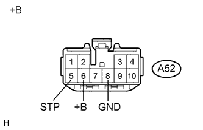
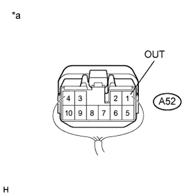

РЕЛЕ УПРАВЛЕНИЯ СТОП-СИГНАЛАМИ > ПРОВЕРКА |
| 1. ПРОВЕРЬТЕ ЭБУ УПРАВЛЕНИЯ СТОП-СИГНАЛАМИ |
|  |
Отсоедините разъем A52 ЭБУ стоп-сигналов.
Измерьте напряжение в соответствии со значениями, приведенными в таблице.
| Контакты для подключения диагностического прибора | Состояние | Заданные условия |
| A52-5 (STP) - масса | Педаль тормоза отпущена | Менее 1 В |
| Педаль тормоза нажата | 11–14 В | |
| A52-6 (+B) - масса | Всегда | 11–14 В |
| *a | Вид спереди разъема со стороны жгута проводов: (к ЭБУ стоп-сигналов) |
Измерьте сопротивление в соответствии со значениями, приведенными в таблице ниже.
| Контакты для подключения диагностического прибора | Состояние | Заданные условия |
| A52-8 (GND) - масса | Всегда | Менее 1 Ом |
|  |
Подсоедините разъем A52 ЭБУ стоп-сигналов.
Измерьте напряжение в соответствии со значениями, приведенными в таблице.
| Контакты для подключения диагностического прибора | Состояние | Заданные условия |
| A52-1 (OUT) - масса | Педаль тормоза отпущена | Менее 1 В |
| Педаль тормоза нажата | 11–14 В |
| *a | Вид спереди разъема со стороны жгута проводов: (к ЭБУ стоп-сигналов) |